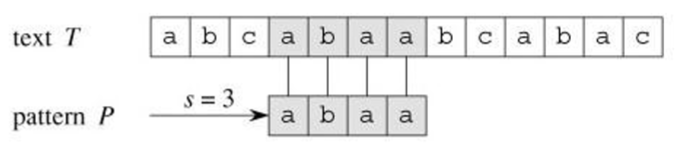
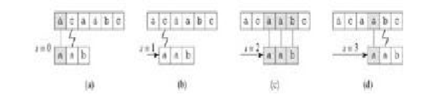
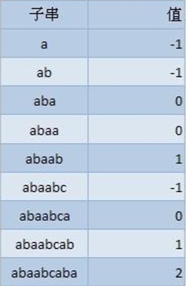

最近经常使用Windows 10 预览版自带的pdf阅读器看书，有时候为了快速找到我感兴趣的内容，就会使用文档关键字搜索 关键字搜索使用的就是我们要说的字符串匹配，即是在给定的母串中快速找到目的串的算法。
《算法导论》上这样定义它：假设文本是一个长度为 n 的数组 T[1...n]，模式是一个长度为 m<=n 的数组 P[1....m]。 进一步假设 P 和 T 的元素都是属于有限字母表 Σ.中的字符

目标字符串是 T=abcabaabcaabac，模式 P=abaa 。
由图可以看到，abaa在索引3处出现。我们能想到最简单的匹配方法是循环遍历所有的字符
//最简单的匹配伪代码 String-Match(T, P) n ← length[T] m ← length[P] for s from 0 to n - m do if P[1 ‥ m] = T[s + 1 ‥ s + m] //对 n-m+1 个可能的位移 s 中的每一个值，比较相应的字符的循环必须执行 m 次。 then print "Pattern occurs with shift" s
过程如下：时间复杂度O((n-m+1)m)
//简单匹配代码实现 //测试match("banananobano","nano") int String_Match(const string &target, const string &pattern){ int target_len = target.size(); int pattern_len = pattern.size(); int target_index = 0; int pattern_index = 0; while(target_index < target_len && pattern_index < pattern_len){ if(target[target_index] == pattern[pattern_index]){ target_index++; pattern_index++; } else { target_index -= (pattern_index - 1); pattern_index = 0; } } if(pattern_index == pattern_len){ return target_index - pattern_len; } else return -1; }
算法复杂度O(target_len*pattern_len)。仔细观察测试用例的话我们会发现，当target_index = 2时，后面我们匹配了3个字符，第四个不匹配，那么target_index就回到了3； 此时如果向右移动一位，那么 nan 最先匹配的字符序列将是 an,这肯定是不能匹配的， 之后再右移一位，匹配的是 nan 最先匹配的序列是 n,这是可以匹配的。 如果我们事先知道 pattern本身的这些信息就不用每次匹配失败后都把target_index回退回去，也就是说设法将不可能匹配的字符直接跳过，提高效率。
下面进入我们的主题部门，使用KMP算法解决该问题，在此之前我们先要明白几个概念： 覆盖函数 覆盖函数所表征的是 pattern 本身的性质，可以让为其表征的是 pattern 从左开始的所有连续子串的自我覆盖程度。 比如如下的字串，abaabcaba的覆盖，代表的是前k个字符和后k个字符一样 即 k = -1代表前后没有字符覆盖 k = 0代表有一个字符覆盖，例如aba中，a = a k = 1代表有两个字符覆盖，例如abaab中，ab = ab ... 以此类推
//计算覆盖函数的代码 int[] Overlay(const string &pattern, int *overlay_function){ const int pattern_len = pattern.size(); int index; overlay_function[0] = -1; for(int i = 1; i < pattern_len; i++){ index = overlay_function[i-1]; while(index >= 0 && pattern[i] != pattern[index + 1]){ index = overlay_function[index]; } if(pattern[i] == pattern[index+1]){ overlay_function[i] = index + 1; } else { overlay_function[i] = -1; } } return overlay_function; }
还是从左向右匹配，但是当失配发生时，我们不用把 target_index 向回移动，target_index 前面已经匹配过的部分在 pattern 自身就能体现出来，只要改动 pattern_index 就可以了。 当发生在 j 长度失配时，只要把 pattern 向右移动 j-overlay(j)长度就可以了。 如果失配时 pattern_index==0，相当于 pattern 第一个字符就不匹配， 这时就应该把 target_index 加 1，向右移动 1 位就可以了。
//KMP算法代码 int KMP(const string &target, const string& pattern){ const int target_len = target.size(); const int pattern_len = pattern.size(); int *overlay_function = new int[pattern_len]; //调用生成覆盖函数 Overlay(pattern,overlay_function); //匹配开始 int pattern_index = 0; int target_index = 0; while(pattern_index < pattern_len && target_index < target_len){ if(target[target_index] == pattern[pattern_index]){ target_index++; pattern_index++; }else if(pattern_index == 0){ target_index++; }else { pattern_index = overlay_function[pattern_index-1] + 1; } } if(pattern_index == pattern_len){ return target_index - pattern_index; }else { return -1; } delete []overlay_function; }